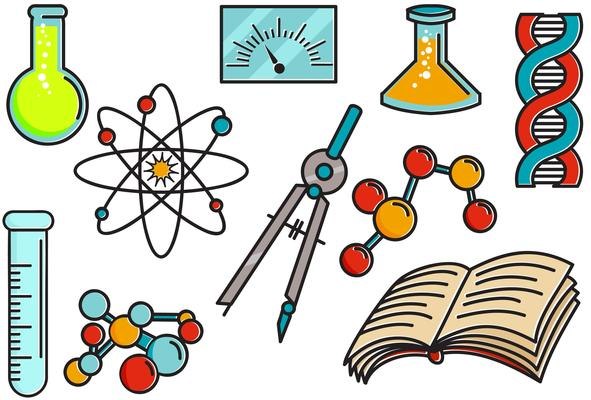
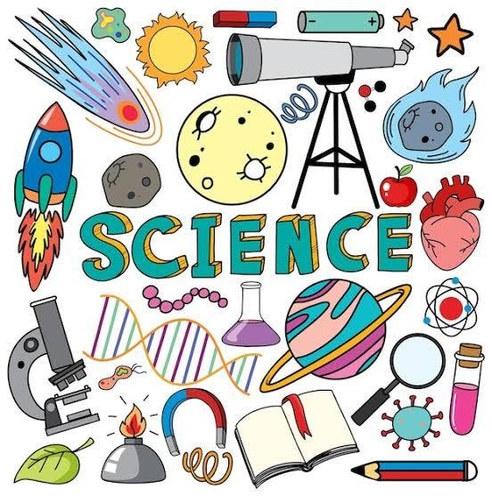

Discover Science Together!
A Parent's Guide to the Science Curriculum

Welcome!
Explore the exciting world of science with your child. This pamphlet introduces the Secondary 1-3 science curriculum and how you can support learning at home.
Our Goals
- Spark curiosity and love for learning
- Build skills for the future
- Connect science to everyday life
What Your Child Will Learn
- Living things and ecosystems
- Matter, energy, and forces
- Our planet and the universe
- Hands-on experiments
Learning Objectives
Your child will develop:
- Scientific knowledge
- Critical thinking
- Collaboration skills
Teaching Approaches
- Inquiry-based learning
- Collaborative projects
- Real-world applications
Assessment Strategies
- Practical tasks
- Projects
- Reflections
Benefits of Science
- Prepares for STEM careers
- Enhances problem-solving
- Fosters lifelong learning
Science in Everyday Life
Science is all around us! From cooking to weather, encourage your child to explore.
Support at Home
- Ask questions
- Explore together
- Encourage curiosity
Encouraging Curiosity
Praise effort and provide opportunities for discovery.
Resources
- Science museums
- Educational videos
- Books
Stay Connected
Contact us: [email/phone]
"Science is a way of thinking." - Carl Sagan